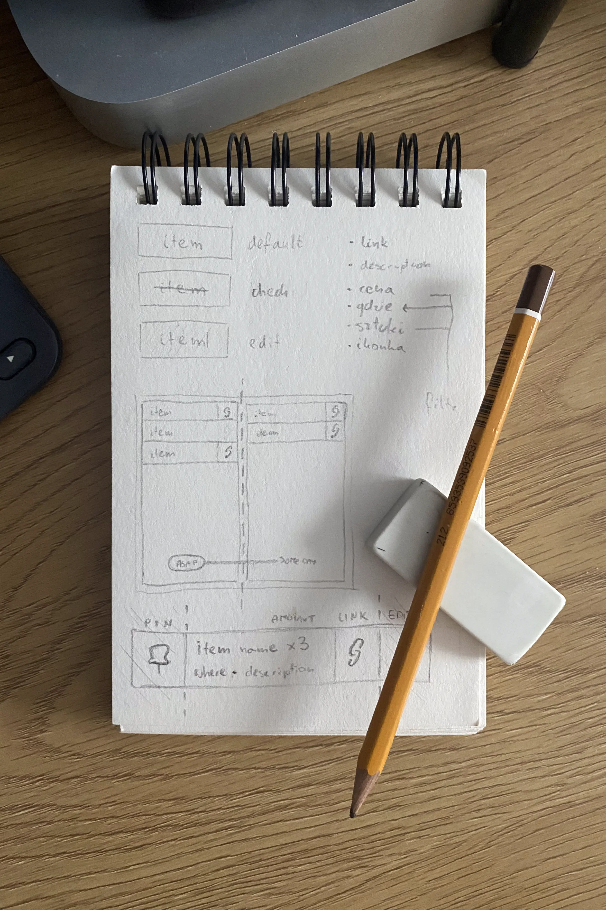

August 1st, 2023
BUY_it – Shopping List Progresive Web App
Vanilla JavaScript PWA. Remembering things to buy outsourced to an app. Name it, describe it, prioritize it, tag it, link it...

TL;DR
See the project at buy.deszczak.work
Update (Aug 4th):
Version 1.2 has been published and is now available. The photo above presents v1.0.
What is it:
A shopping list app that allows you to link and check items, set their tags and priority, filter them and edit whenever you need. Offline first based on local storage..
Achieved with: HTML, CSS, vanilla JavaScript, Netlify, Google Fonts & Material Icons, PWABuilder, some googling as well as my personal beta testers and users :)
Characteristics:
-
Works on any device and majority of the browsers, staying fully responsive even for the smallest of screens1.
-
Fully offlineable – works offline making use of local storage.
-
Functionality allows adding, checking, editing and removing items.
-
Each item besides its name can have a description, amount, tags, priority and a link attached to it. (Based on potential user insights)
-
Minimalistic black and white design.
-
Possibility of filtering items by their priority or tags.
Version 1.1:
A few fixes and filtering functionality.
-
(Fix) The modal window for adding and editing items appears now higher on mobile. Stays above the keyboard.
-
(Fix) Hashtags (#) in the tag input are automatically changed to commas on save.
-
Filtering now works with both priority and tags at once.
Version 1.2:
Renovated header, new help section and a filtering option as well as a new visual aid.
-
(Based on user feedback) Added a "help" button responsible for showing a modal with information about the app and instructions for it.
-
Filtering now has its own section, shows currently chosen tag and allows for filtering of checked and unchecked items.
What's the challenge?
The challenge is to digitally standardize a shopping list by making a product people would want to use.
It should be simple, easily accessible and deliver all user-needed functionality in the context of preparing for and going shopping – for both offline and online.
What insights do I have?
Talking to few of my friends and knowing my own needs I gathered information about necessary characteristics of the potential app and those that would be great to have.
Previously I've also made a shopping list app for me and my flatmates which provided even more insights.
Based on the conversations and experiences the necessary characteristics seemed to be:
-
App – works offline on a smartphone and is easily accessible as well as simple to use.
-
Item existence – possibility to add, check, edit and remove it.
-
Item details – option (not necessity) to describe, in some way categorize and prioritize an item.
-
Design – minimalistic and similar in placement of the functions to other popular apps.
There were some functions being described that didn't appear in everyone's statements but seemed like a great addition to the functionality of the app.
They are presented in the list below:
-
Item details – option to add a link to an item as well as the amount of it needed and a related shop.
-
Filtering – possibility to filter items by their priority and the shop.
-
Design – dark and light mode themes plus possibility to switch between the two.
There have also been two use cases brought up. People list things they want to buy as soon as possible as well as some day in the future. There were also different distincions made like: buing for myself and buying for others, buying personal stuff and things for work etc.
It seems like there are a lot of things to be considered.
– Insights for updates – later, after the app was already published there appeared to be a few problems with the app, so the priority was to fix them but people using the app also proposed some new functionality:
-
(New) App – create a "help" section describing the app, especially instructing on swiping/scrolling of the items on desktop.
-
(Fix) Filtering – doing it by categories/tags was already added but didn't work with priority at the same time.
-
(New) Filtering – possibility to filter by checked/unchecked items.
What are the ideas?
There are always many ideas. Starting from the big picture perspective and then going into details seems to be working the best. That's why it is exactly what I did.
The big picture
The project could be done as a native mobile application which would probably give the best outcomes but I haven't learned any native JS frameworks nor mobile languages yet.
I could learn... but maybe another time. Even if I coded the app it would not be easy for me to publish and use it right away.
I can write websites so maybe I could code one... BUT I think nobody including me would want to open a browser and input the link or click on a bookmark every time. Not to use a shopping list app.
Coding a Progressive Web Application (PWA) isn't much different from writing a website though and I already have some experience doing that.
It would not be as good as a native application especially when it comes to the installation process, but it'd still be better than a website. And most importantly – at least I'd want to use it!
The in-between
Not going too far from the wider perspective it's important to assess what kind of Javascript would be the best fit for the challenge.
Vanilla, Alpine and Svelte are my top 3 in terms of what I know and can use. I love using Svelte and it's still the one I used the least so it comes to my mind as the first and I'd happily make a full project using it to also learn more!
Taking into consideration the situation I'm in career-wise I think it would be better for me to use vanilla JavaScript though.
I already have a mostly Alpine.js oriented project to showcase. Making one in Svelte could be seen as good but probably more like 5 years from now.
It's still rarely used in production as the majority of projects use React, Vue or even Angular.
Job requirements for Junior Frontend Devs call for good or even exelent knowledge of JS or the aforementioned frameworks but not others.
Even though they all are JavaScript, in the end each of them works very differently, so it's understandable why great knowledge of vanilla JS is more valuable.
Because of it I think that delivering a vanilla JavaScript project should be my priority for better chances at further career development.

The details
As you can (or can't) see on the picture above I've planned to divide the app into two lists based on the gathered insights.
One would be for the items needed as soon as possible and other for those planned to be bought some day.
You'd be able to switch between the lists like you switch between tabs in Safari on iOS – by swiping (more on changing my mind later).
Items could be pinned to top (I might add this functionality later, for now the available filtering options seem to be good enough).
There was also no tags function, but a place to write "where" a particulat item is planned to be bought. Later it came to me that tags could easily replace this idea simultaneously broadening app's functionality.
I also thought items would be small pills in a grid/flexbox container with only their names visible (not a wise idea), but in a second I've changed my mind remembering previous experiences (oof!).
It seemed like a great idea to be able to add item's price as well, but description already allowed that and it's not often that we know how much exactly a thing will cost.
One last idea was being able to add icons to items for easier recognition but don't we already have emojis that can do exactly that and we're used to using them? Yeah.
While coding and using the app I came up with some new ideas myself and my beta testers helped with that ideation as well. But for now I will answer...
What's the plan?
-
Code a Progressive – Offline First – Web Application using vanilla JavaScript:
-
Make its design minimalistic, simple and intuitive to use (utilizing Jakob's law2 for example).
-
In terms of the list functionality, make it possible to add, check, edit and remove the items.
-
Each item should be allowed to have a name (the only obligatory position), description, amount, tags, priority and a link attached.
-
It should be possible to filter items based by their categorization (tags) and priority.
-
Deploy the app to Netlify with a custom domain.
-
Optimize the PWA aspect of the app with PWABuilder.
-
Share the app with frie... beta testers and actively listen to feedback.
-
Fix any issues and improve the app.
What are the obstacles?
Looking at the plan above the only big obstacle might be related to the app's design. It should be easy and enjoyable to use. But how to achieve that?
I researched other apps and found their assets, similarities, consistencies between them to use in my own design but also noticed that my idea of a shopping list is somewhat different than all of them.
I decide to go with the insights I gathered. Because of the small and somewhat biased sample it's hard to know what the design should be.
I could gain from usability tests which I'll consider but the best evaluation of the design would probably be achieved by letting people use the it in the real world.
Some of us shop every day so there are many opportunities to "test" the app and tell later what are its shortcomings and advantages.
I'll depend on the feedback and later possibly do more UX research.
None of the development part should be a problem. The project in it's necessry functionality seems to be an easy one so I don't expect any obstacles to occur.
I'd like to make the installation process better than it is by default. This might be somewhat difficult as I've never before worked with PWA's installation JS events.
I'm sure I'll learn and do it even if not for the first deployment :)
I made it!
I thought... Article to be continued...
...and I made it better!
There are always things we can improve. Sometimes it's necessary to work on it immediately and sometimes it can wait a little.
Some of the improvements can even wait until the v2 or another project, so...
The results and lessons learned
Here I'll write about the things to be improved next time, all the lessons learned from the process and the results of this project.
References and attachments
-
Project's website – buy.deszczak.work
-
1 UX Pickle. What is the smallest screen size you should design for? @uxpicle.com
-
2 Yablonski Jon (2021). Prawa UX (Laws of UX). Jak psychologia pomaga w projektowaniu lepszych produktów i usług